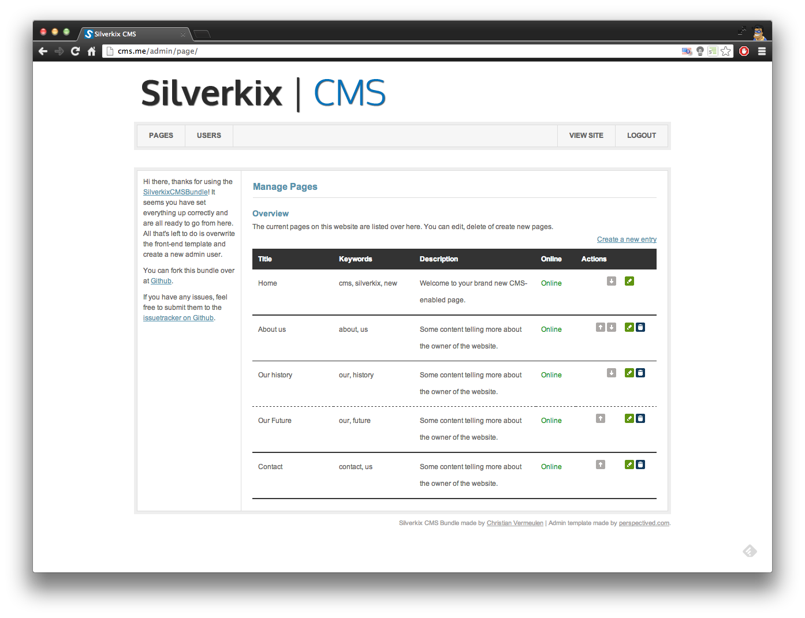
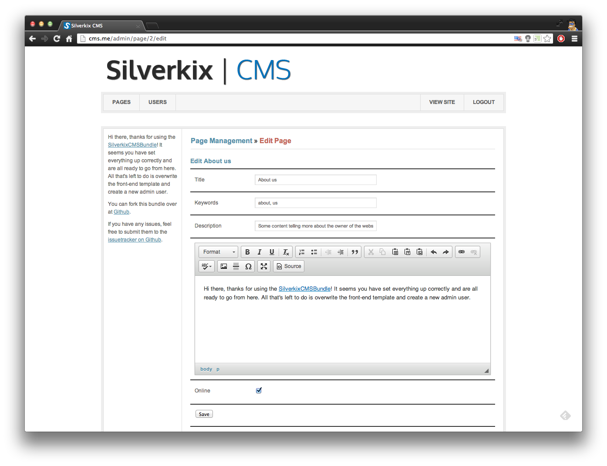
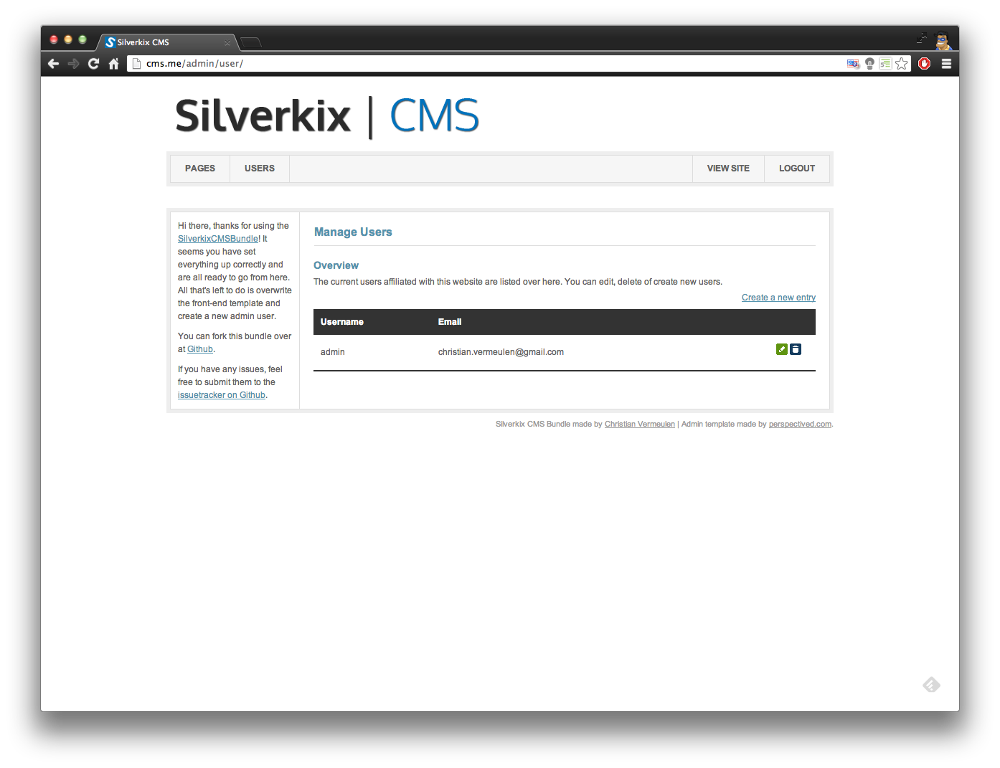

Welcome to the Silverkix CMSBundle for Symfony
This bundle will help you kickstart any project requiring a simple CMS. This will mainly be for smaller websites which will be managed by the client himself and not updated very often.
This cms includes the following features:
- Pages (include Seo data)
- User management
Screenshots
- 
- 
- 
Installation
1) Using composer
Add the bundle to your composer.json
"require": {
....,
"silverkix/cms-bundle": "dev-master",
.....
},
Run your composer update
$ php composer.phar update
2) Paste to security.yml
security:
encoders:
Silverkix\CMSBundle\Entity\User:
algorithm: sha512
encode_as_base64: false
iterations: 1
role_hierarchy:
ROLE_ADMIN: ROLE_ADMIN
ROLE_SUPER_ADMIN: [ ROLE_USER, ROLE_ADMIN, ROLE_ALLOWED_TO_SWITCH ]
providers:
administrators:
entity: { class: SilverkixCMSBundle:User, property: username }
firewalls:
admin_area:
pattern: ^/
anonymous: ~
form_login:
login_path: admin_login
check_path: admin_login_check
default_target_path: admin_index
always_use_default_target_path: true
logout:
path: /logout
target: /
access_control:
- { path: ^/admin, roles: ROLE_ADMIN }
3) Add routing
Add these two routes to your app/config/routing.yml
## CMSBundle admin routing
admin:
resource: "@SilverkixCMSBundle/Resources/config/routing/admin.yml"
prefix: /admin
## CMSBundle Site routing
site:
resource: "@SilverkixCMSBundle/Resources/config/routing/site.yml"
prefix: /
4) Update database
Run php app/console doctrine:schema:update to update the database
5) Load fixtures
add the fixtures bundle to your kernel:
$bundles = array(
....,
new Doctrine\Bundle\FixturesBundle\DoctrineFixturesBundle(),
....,
);
6) Extend your bundle
In order to overwrite the frontend template you need to extend out bundle so you can overwrite any necessary stuffz.
<?php
// src/Acme/DemoBundle/AcmeDemoBundle.php
namespace Acme\DemoBundle;
use Symfony\Component\HttpKernel\Bundle\Bundle;
class AcmeDemoBundle extends Bundle
{
public function getParent()
{
return 'SilverkixCMSBundle';
}
}
7) Create public uploads folder
[PUBLIC_HTML]/uploads (chmod 777)
8) Clear Cache / Install Assets
clear your cache and install your assets
$ php app/console cache:clear
$ php app/console assets:install9) See your brand new website!
You can now see your website at http://localhost/app_dev.php (if that is the local url of your installation of course!)
To open the admin panel you navigate to /app_dev.php/admin. Default admin user:
Username: admin
Password: mypassAdding Your Frontend
In order to put your own frontend on the website you need to overwrite the one from this bundle. Since you extended the bundle in step #6, all you have to do is copy the template files you want to overwrite to your bundle.
Generally you will only need to overwrite index.html.twig, but you can overwrite any template you want.
$ cp vendor/silverkix/cms-bundle/Silverkix/CMSBundle/Resources/views/Site/index.html.twig src/Acme/DemoBundle/Resources/views/Site
As you can see the front-end templates reside in views/Site while the admin templates reside in views/Admin.
This is also the case for public files. See public/admin/ for backend files and public/site/ for frontend files.
Collaboration
Feel free to fork this repo and add / improve features. Any pull requests and / or issues are very welcome!